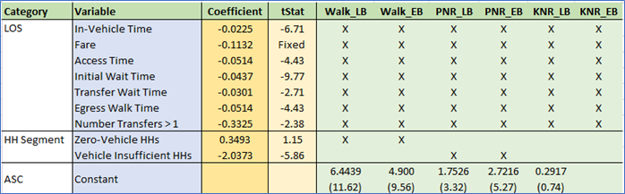
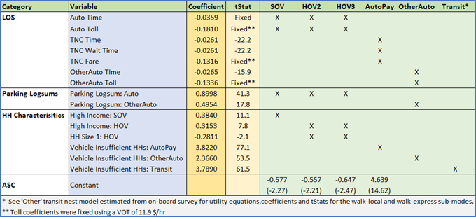

Resident Mode Choice
This document summarizes the mode choice (MC) models estimated using travel survey and other data from the Triangle region. These are nested logit models that predict which modes of travel will be used based on things like travel time, transit fare, and transit headway. Mode choice models play a crucial role in model estimation, not only directly but also through logsums that are then used to inform destination choices.
Key considerations
In addition to the usual key drivers of mode choices such as LOS variables, there were key modeling requirements for the Triangle region:
- One of the key modeling requirements for the Triangle region is the focus on transit usage and ability to analyze the congestion mitigation potential of future new transit modes/projects. To that end, a detailed transit mode choice component is warranted. In addition to the household travel survey, Caliper had access to a transit onboard survey. While the proportion of transit trips in the household survey is in accordance with regional shares, this data alone was not sufficient to estimate parameters for transit sub-modes. Rather than combine the onboard survey with the household survey (for various reasons including inconsistency between trip type), Caliper estimated detailed transit sub-mode models conditional on the main transit choice using the onboard survey. This is illustrated in later sections.
- The mode choice model structure must be amenable to incorporate future transit modes such as BRT, LRT etc.
- A key mode identified during exploratory analysis was the Non-HH Auto mode, that is comprised of ride sharing and rental cars (classified together as AutoPay) and borrowed cars (classified as OtherAuto).
- Parking was a major consideration for the auto modes, especially in designated parking districts in the CBD/downtown/university areas of cities in the Triangle region, where parking space is limited.
- For Non-Home Based (NHB) trips, the trip mode is conditional based on the mode of the home-based leg of the tour. Hence mode choice models were not estimated for these trips.
Approach
The initial determination was whether to combine the household travel survey with the on-board survey and subsequently estimate a model using the entire set of modes (including the transit sub-modes). This would entail potential re-calculation of the survey weights.
The alternate approach was to estimate conditional transit sub-mode models using the onboard survey and then estimate a nested mode choice model using all the modes but fixing the transit sub-mode utility coefficients as appropriate. Essentially, the logsum computed from the transit nest would be the key utility component for the main transit alternative. The transit sub-mode model can also be viewed as a model that predicts transit sub-mode shares conditional on the main mode being chosen as transit.
A closer look at the onboard survey revealed that while the data regarding the transit sub-mode was rich, the information regarding the tour type was not available. Whether trips are work, other or shop related could be ascertained from the onboard survey but there was no information regarding tour types or the overall travel pattern of the individual respondent. Given that the trip purposes in the TRM model are designed based on the tour type and trip type, records from the onboard survey could not be matched directly to the TRM trip purpose definitions. Therefore, the alternate approach of estimating transit sub-models from the onboard survey was chosen.
Given the above, the mode choice estimation approach for the TRM followed a two-stage process:
- Stage1: Estimate Transit sub-mode models (nest) for three main types (Work, Shop and Other) from the onboard survey. The transit nest is organized by access mode and transit mode, as was indicated during the estimation process. The three access modes are Walk, Park&Ride (PNR) and Kiss&Ride (KNR). The modes in the base year include local bus (LB) and express bus (EB).
- Stage 2: Estimate a nested model for each trip purpose in the TRM. The top-level choices are the main modes namely Auto, Non-HH Auto and Transit. The Auto nest includes the sub-modes SOV, HOV2 and HOV3. The Non-HH Auto nest includes the modes AutoPay and OtherAuto. The appropriate Transit nest is stitched by keeping the utilities and the coefficients from the transit nest models fixed (essentially fixing the logsums). Depending on the trip purpose and observed distributions in the survey, certain transit access modes were dropped for certain purposes. The parameters of the utility function of the various auto modes, ASC’s and nest coefficients for the top-level alternatives are estimated during the process. Certain key utility terms common to a particular nest (e.g., Transit) were added to the appropriate nest alternative (e.g., to the Transit alternative) to capture the fundamental choice of the main mode. A weighted estimation was performed using the trip final weights.
The conceptual figure of a typical nested model is presented in the figure. Note that the utility coefficients and structure for the Transit come from the estimations in Stage 1 described above. For instance, for the w_hb_w purpose, where the tour mode is work and the trip mode is work, the transit nest for the work transit purpose is used in the final mode choice specification.

In the following sections, the three Transit nest models are first described, followed by the completed models for each of the TRM trip purposes.
Transit Submodels
Work
This model is estimated from the onboard survey for trips whose purpose is work. All six transit modes are considered, and the estimated model has the nested structure below, nested by access mode and then by transit mode.

Utility specification
The utility specification mainly comprises of the level of service transit variables and auto sufficiency market segmentation terms. The utility structure is shown in the first table below where the letter ‘X’ indicates that the variable is included in the utility equation for the appropriate alternative (column).The ASC row shows the estimated constant values with the corresponding tStat within the brackets. The three nest coefficients are also shown with their tStats.




Notes
- Transit LOS variables are significant as expected.
- A fare coefficient could not be directly estimated. Instead, a VOT of 11.9 $/hr was used to convert the fare to equivalent time and a time coefficient was estimated.
- Nested Logit estimation is known to be non-unique and is influenced by the starting values of the nest coefficients. This implies that potentially several estimations must be run with a different set of starting nest coefficients. After a wide range of experiments on the TRM data, it was necessary to fix the PNR nest coefficient to 1.
- As expected, households with zero vehicles tend to prefer walk access to transit options.
- Vehicle insufficient households prefer not to use PNR since that would presumably deem the vehicle to be unused at the parking lot.
- While preparing the estimation dataset, the appropriate skim for the various transit mode based on time of day was attached to the survey records and used in the utility specification.
Other
The transit sub-model estimated for the other purpose has a similar structure to the work purpose.
Utility specification


Notes
- A VOT of 11.9 $/hr was used to obtain the fare coefficient.
Shop
Since it is unlikely that the shop purpose trips use PNR and KNR, the transit alternatives consist only of the walk access modes. This was also borne by the choices in the survey that had almost no PNR/KNR trips for the shop purpose.
Utility specification


Notes
- A VOT of 11.9 $/hr was used to obtain the Fare coefficient.
Homebased work trips
W_HB_W
These are trips on a work tour with one end being home and the other being work. During the estimation process, the full nesting structure including all modes in the transit sub-nest were specified. The utility equations from the work transit nest model along with their coefficients were retained (and fixed), except the transit sub-mode ASCs. These were allowed to be determined by the estimation. This was done to enable the estimation to adjust the constants of the transit mode to fit the shares from the household travel survey. A weighted estimation using the trip weights were performed.
The utility spec for the combined data is shown below. Note that the transit sub-mode utilities are not shown in the table.
Utility specification


Notes
- As expected, the time coefficients are highly significant. The TNC time coefficient is deemed less onerous than other auto modes, which is an intuitive result given that you don’t have to drive and can (e.g.) read a book
- Toll coefficients for the auto modes were computed using a VOT of 16.4 $/hr.
- The nest structure for the NonHHAuto is justified, given the tStat of the nest coefficient of -11.8. The Auto nest is retained despite the nest coefficient having a low tStat.
- Parking logsums have a significant effect on the SOV and HOV modes as well as the OtherAuto mode.
- High Income has a positive effect on the SOV and HOV modes.
- Vehicle insufficient households have a higher tendency to prefer AutoPay and OtherAuto modes as opposed to SOV and HOV modes.
- During application, the model is applied to five segments and four time periods (20 combinations). The segments are v0 (Zero Autos), Low-Income and High-Income vehicle insufficient HHs (ilvi and ihvi), Low-Income and High-Income vehicle sufficient HHs (ilvs and ihvs). The coefficients of the high income and vehicle insufficient utility terms are enforced depending on the segment. The appropriate time-period skims by mode are used.
- OD based TNC wait times and fares are used as utility variables for the AutoPay mode and the computation of these variables is described in the Accessibility page.
W_HB_O
The survey revealed that nearly all the transit trips for this type are walk access. Therefore, the PNR and KNR branches were removed from the transit nest in the final specification. The Transit node only has the walk-local and walk-express alternatives. The appropriate utility equations and coefficients (expect the ASCs) for the walk-local and walk-express modes from the work transit sub-nest model are ported over and fixed. The final nesting structure is shown below.
Utility specification


Notes
- As expected, the time coefficients are highly significant.
- The VOT for the Auto modes computed from the time and cost estimates is close to the desired value of time of $16.4/hr
- Although a nest coefficient for the Auto mode could not be estimated, this coefficient was set to 0.75 to match the estimated value from the w_hb_w model.
- Since this purpose consists of short errand on the work tour, parking logsums for work were not found to be significant.
- The positive effect of high income on auto modes persisted.
- Vehicle insufficient households incline towards OtherAuto and Transit modes
W_HB_EK12
These are school pick up and drop off trips and the survey indicates that the two predominant modes were HOV2 and HOV3. Rather than estimate a mode choice model, a simple probability split of 50.4% for HOV2 and 49.6% for HOV3 was used.
Homebased non-work trips
The purposes N_HB_OME, N_HB_ODShort, N_HB_ODLong, N_HB_OMED and N_HB_K12 fall under this category. Typically, it was observed that transit PNR and KNR modes were seldom used for these purposes. The tree structure for these purposes is shown below with one exception being that the N_HB_K12 purpose does not have the walk-express mode but has a SchoolBus mode.

N_HB_OME
These are home based trips that involve shopping, eating out and other maintenance cash spending activities that are part of a non-work tour. Therefore, the transit nest model for the shop purpose (with the walk-local and walk-express alternatives) is used. This is the only model where the ‘Shop’ transit sub-nest coefficients are used. As expected, for trips such as shopping, PNR and KNR modes were not chosen. If a person has access to a car, they will use it buy groceries rather than try and cary them on the bus.
Utility specification


Notes
- The time coefficients are highly significant.
- Parking logsums have an important effect on choice of auto modes, which makes sense.For work trips, you have to work near your job and parking is less of a consideration. For non-mandatory trips like shopping, people are more sensitive to parking cost and availability.
- High income has a positive effect on HOV and an even larger positive effect on HOV trips
- HH Size 1 coefficient highly negative for HOV trips
- Vehicle sufficiency plays a significant role in choice of SOV and other modes (with varying effects).
- During model application, the percent of high income corresponding to the origin zone is used, since the application is aggregate.
N_HB_OD_Short
These are home based other trips with a short duration that are part of a non-work tour. The walk access branch (with the walk-local and walk-express alternatives) from the ‘Other’ transit nest model is used.
Utility specification


Notes
- The coefficients for the Non-HHAuto modes during the estimation had incorrect signs and were generally not significant. Therefore, a binary choice model with the alternatives AutoPay and OtherAuto was estimated from the survey using all the home-based trips on non-work tours. Only trips that chose these two alternatives were used in the estimation. The binary choice model coefficients and utility equations were fixed in the final mode choice model. These coefficients are indicated by an appropriate symbol in the table above.
- The time coefficient is highly significant.
- Parking logsums had a positive effect on the OtherAuto mode
- High income has a negative effect on choosing the transit mode
- Single person households tend not to generate HOV trips
- Vehicle insufficiency increases probability of choosing transit
- During model application, the percent of high income corresponding to the origin zone is used, since the application is aggregate.
N_HB_OD_Long
These are home based other trips with a long duration that are part of a non-work tour. The walk access branch (with the walk-local and walk-express alternatives) from the ‘Other’ transit nest model is used.
Utility specification


Notes
- The time coefficients are highly significant.
- Parking logsums have a positive effect on all the auto modes
- High income has a negative effect on choosing the transit mode
- Single person HHs do not generate as many HOV trips
- Vehicle insufficiency increases probability of choosing Transit, AutoPay and OtherAuto
- During model application, the percent of high income corresponding to the origin zone is used, since the application is aggregate.
N_HB_OMED
These are home based medical related trips (including pharmacies) that are part of a non-work tour. The walk access branch (with the walk-local and walk-express alternatives) from the ‘Other’ transit nest model is used.
Utility specification



Notes
- During the initial estimation, the time coefficient (along with an asserted toll coefficient derived from the time coefficient) for the auto modes had a positive sign. A model without the toll coefficient however yielded a feasible value for the time coefficient. This value was fixed in the final estimation along with the asserted toll coefficient using the value of time of $11.9/hr.
- The time coefficients for the NonHHAuto modes are highly significant.
- Parking logsums had a positive effect on all the auto modes mode
- High income has a positive effect on choosing the auto modes
- Households with size 1 do not tend to generate HOV trips
- Vehicle insufficiency increases probability of choosing Transit, AutoPay and OtherAuto
- During model application, the percent of high income corresponding to the origin zone is used, since the application is aggregate.
N_HB_K12
These are home based school related trips that are part of a non-work tour and include school trips made by kids and drop off trips. The survey indicated that the AutoPay and all transit modes except the walk local were not used. Therefore, a simple MNL model with the modes SOV, HOV2, HOV3, OtherAuto, Walk-Local transit and SchoolBus was estimated. The utility equation for the walk local transit was borrowed from the ‘Other’ transit sub-mode model.
Utility specification


Notes
- There is no Walk access to express bus mode.
- The time coefficients are significant as expected with the school bus time being onerous compares to driving kids to school.
- Large HHs prefer school pickup/drop-offs
- Choice of mode for this purpose is probably determined by several other factors specific to individual households are thus not adequately captured by a choice model. Nevertheless, a choice model helps fix the shares of the primary modes for this purpose, namely SchoolBus and HOV
Calibration
Mode choice ASCS were calibrated to match the adjusted targets shown below. The mode choice targets are generated from the survey for each combination of trip purpose and HH market segment. Note that target shares are not split by transit sub-mode due to paucity of transit trips in the survey. The shares vary significantly by market segment, especially for the zero-auto segment as expected. Further, during the transit ridership validation, the survey transit targets were scaled down to match transit boardings.
The additional ASC adjustments were not large, reassuring faith in the model estimates. All these targets were met with a sufficiently small reasonable threshold.

Application
As mentioned earlier, the mode choice output shares can only be applied after the destination choice model has been run. However, the destination choice model requires mode choice logsums by mode, period, purpose and segment. To facilitate this, the mode choice models are run first and the probability matrices and logsums are calculated and stored. After the destination choice model is complete, the stored probability matrices are used to split the appropriate PA matrices by mode. The following rules are used during the mode choice application for a specific purpose, segment and time period.
- For the zero-vehicle segment, SOV, HOV2 and HOV3 are deemed unavailable.
- The appropriate period skims are used, depending on the time period.
- Transit modes are automatically dropped for matrix cells with missing transit skim values.
Caliper Corporation, 2022